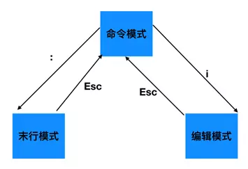

vi 编辑器的使用
1.vi简介
vi编辑器是Linux和Unix上最基本的文本编辑器，工作在字符模式下。由于不需要图形界面，vi是效率很高的文本编辑器。
尽管在Linux上也有很多图形界面的编辑器可用，但vi在系统和服务器管理中的功能是那些图形编辑器所无法比拟的。
vi编辑器通常被简称为vi，而vi又是“Visual interface”的简称。
它在Linux上的地位就像Edit程序在DOS上一样。
它可以执行输出、删除、查找、替换、块操作等众多文本操作，而且用户可以根据自己的需要对其进行定制，
这是其他编辑程序所没有的。
vi 编辑器并不是一个排版程序，它不像Word或WPS那样可以对字体、格式、段落等其他属性进行编排，它只是一个文本编辑程序。
没有菜单，只有命令，且命令繁多。vi有3种基本工作模式：命令行模式、文本输入模式和末行模式。
Vim是vi的加强版，比vi更容易使用。vi的命令几乎全部都可以在vim上使用。
2. vi工作模式
vi有三种基本工作模式：命令模式、文本输入模式、末行模式。

2.1 命令模式
任何时候，不管用户处于何种模式，只要按一下ESC键，即可使Vi进入命令模式；我们在shell环境(提示符为$)下输入启动Vi命令，进入编辑器时，也是处于该模式下。在该模式下，用户可以输入各种合法的Vi命令，用于管理自己的文档。此时从键盘上输入的任何字符都被当做编辑命令来解释，若输入的字符是合法的Vi命令，则Vi在接受用户命令之后完成相应的动作。但需注意的是，所输入的命令并不在屏幕上显示出来。若输入的字符不是Vi的合法命令，Vi会响铃报警。
2.2 编辑模式
在命令模式下输入插入命令i(当前位置插入)、a(当前位置后一位置插入) 、o(下一行插入)可以进入文本输入模式。在该模式下，用户输入的任何字符都被vi当做文件内容保存起来，并将其显示在屏幕上。在文本输入过程中，若想回到命令模式下，按键ESC即可。
2.3 末行模式
在命令模式下，用户按“:”键即可进入末行模式下，此时Vi会在显示窗口的最后一行(通常也是屏幕的最后一行)显示一个“:”作为末行模式的提示符，等待用户输入命令。多数文件管理命令都是在此模式下执行的(如把编辑缓冲区的内容写到文件中等)。末行命令执行完后，Vi自动回到命令模式。
如果要从命令模式转换到编辑模式，可以键入命令a或者i；如果需要从文本模式返回，则按Esc键即可。在命令模式下输入“:”即可切换到末行模式，然后输入命令。
- vi基本操纵
3.1进入编辑模式
| 命令 | 含义 |
|---|---|
| i和I | i在光标前插入，I在行首插入 |
| a和A | a在光标后插入，A在行末插入 |
| o和O | o在光标所在行下一行插入，O在光标所在行上一行插入 |
3.2 移动光标
| 命令 | 含义 |
|---|---|
| h | 光标向左移动 |
| j | 光标向下移动 |
| k | 光标向上移动 |
| l | 光标向右移动 |
| H、M、L | 光标移动到到可见屏幕第一行(H)、中间行(M)、最后一行(L) |
| ^和$ | ^移动到行首，$移动到行末 |
| G和gg | G文档最后一行，gg文档第一行 |
| ctrl+f、ctrl+b | 向前翻屏、向后翻屏 |
| ctrl+d、ctrl+u | 向前半屛、向后半屛 |
| { 和 } | {向上移动一段，}向后移动一段 |
| w和b | 向前移动一个单词，向后移动一个单词 |
3.3 删除命令
| 命令 | 含义 |
|---|---|
| X和x | x删除光标后一个字符，X删除光标前一个字符,包含光标位置字符 |
| dd和 n dd | dd删除所在行，5 dd删除指定行数 |
| d0和D | d0删除光标前本行所有内容，D删除光标后本行所有内容，包含光标位置字符 |
| dw | 删除光标所在位置的字，包含光表所在位置字符 |
3.4 撤销命令
| 命令 | 含义 |
|---|---|
| u | 一步一步撤销 |
| ctrl + r | 反撤销 |
3.5 重复命令
| 命令 | 含义 |
|---|---|
| . | 重复执行上一次操作的命令 |
3.6 复制粘贴
| 命令 | 含义 |
|---|---|
| yy | 和 n yy 和y$ y^ yy复制当前行，5 yy复制5行 |
| p | 在光标所在位置向下新开一行粘贴 |
3.7 选择文本
| 命令 | 含义 |
|---|---|
| v 和 V | v选择单个字符，V选择整行 |
| <<和>> | 选择文本之后，向左缩进，向右缩进 |
3.8 查找替换
| 命令 | 含义 |
|---|---|
| 命令模式下，r和R | r替换当前字符，R替换光标后的字符 |
| 末行模式下，/ + str | n查找下一个，N查找前一个 |
| 末行模式下,%s/abc/123/g | 将文件中所有abc替换为123 |
| 末行模式下,1, 10s/abc/123/g | 将第一行至第10行之间的abc替换成123 |